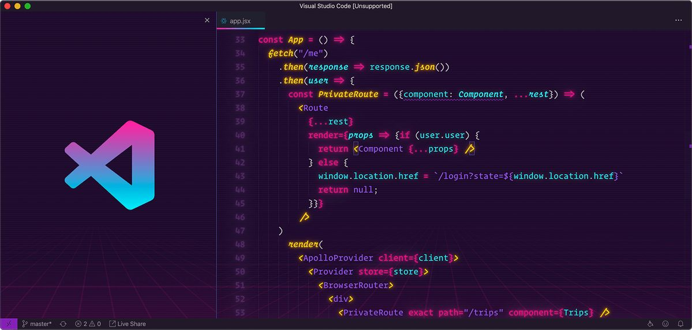
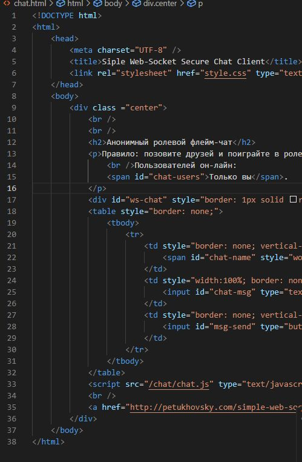
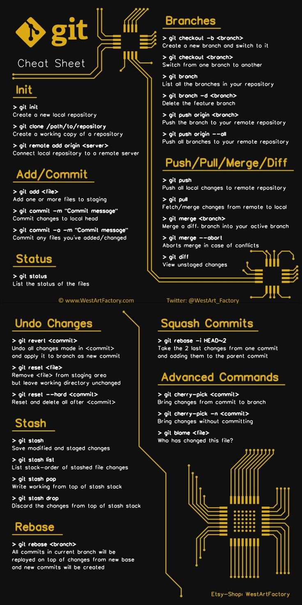
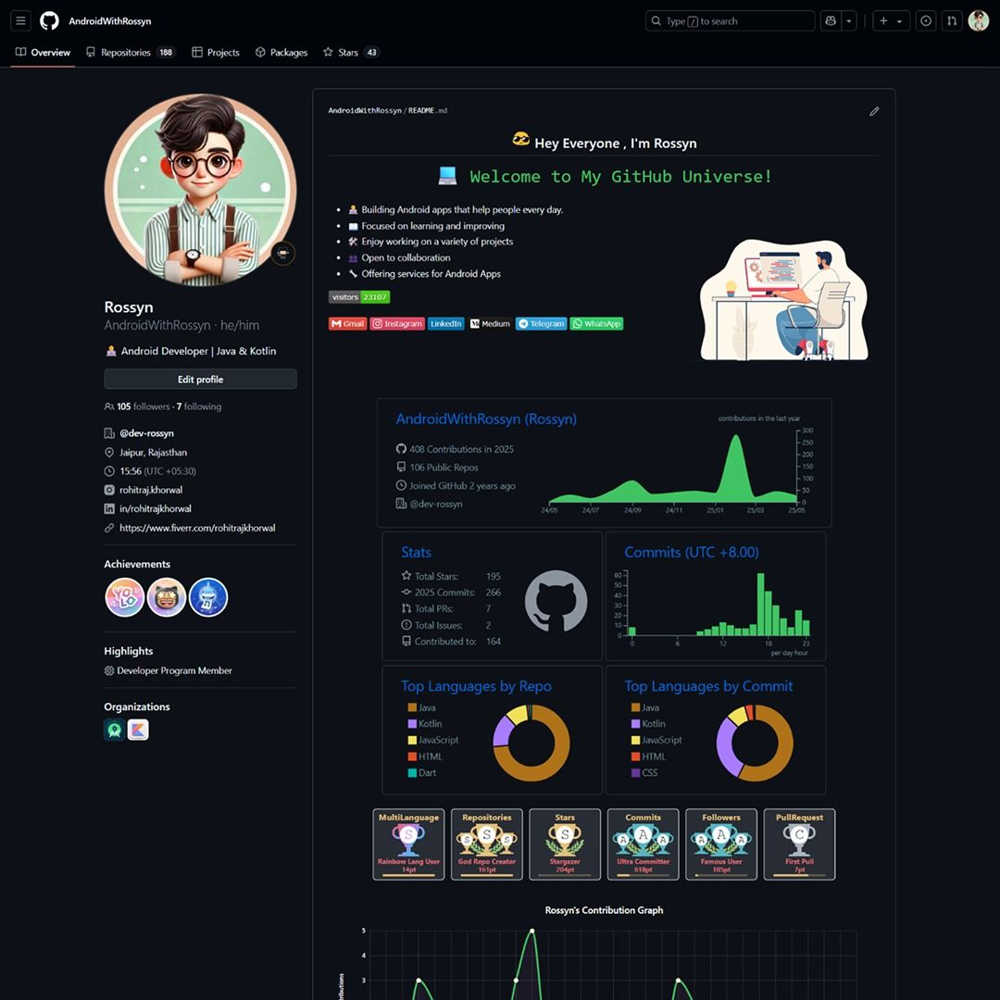
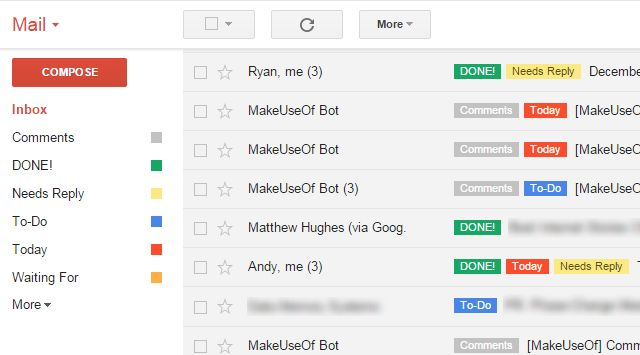
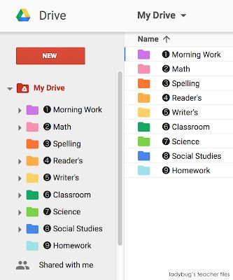
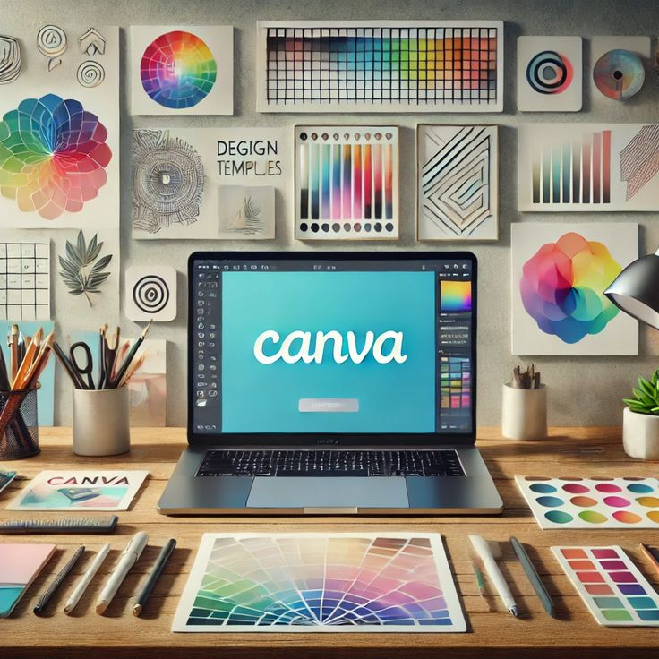
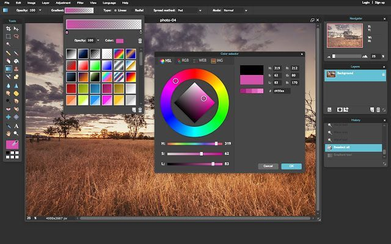

A-Productivity Tools
Productivity tools are programs that allow both individuals and groups to be more productive in their work. They do this by helping to organize work, manage data, create documents, and save / reduce the time required for performing repetitive tasks. The result is enhanced accuracy, improved teamwork and collaboration between team members, and improved overall productivity in both academic and business settings. A few of the most popular productivity tools are listed ,We have mentioned some of the most widely used tools and technologies; to learn more about them, simply click on the arrows..
→Office Suite
-
Microsoft Word:
Microsoft Word more effectively and help increase work productivity. Since the introduction of Microsoft Office 2007, Microsoft Word has been organized into the Ribbon user interface for easy navigation and access. The Ribbon includes the Home, Insert, Design, Layout, Reference, Review, and View tab options for a more straightforward process of locating tools. Each tab contains a variety of commands. As an example, the Home tab contains the font tools and alignment tools, while the Insert tab contains options for inserting tables, charts, and images. In addition to the above command options, users also have the option of customizing their Ribbon to allow them to access their most-used command options with increased efficiency.

-
Microsoft Excel:
operations, create charts, develop different types of financial models, and more. The use of Excel functions such as PivotTable, Conditional Formatting, Macros (Visual Basic for Applications), enables you to easily manage and compute large amounts of data, automate tedious tasks, and take advantage of advanced analytics capabilities by integrating other Microsoft applications into Excel. The Ribbon in Excel was introduced with the release of Office 2007; it allows you to access all of the tools you need, as well as any tools you may need in the future, by scrolling to the appropriate tab (Home, Insert, Formulas, Data, or View). In addition, new features such as the Quick Access Toolbar and Formula Suggestions further increase the productivity of both new users and experienced users of Excel.

-
Micrsosoft PowerPoint:
Since it was first introduced in 1987, Microsoft PowerPoint has become the world's most popular presentation software. It's part of the Microsoft Office Suite and provides users with everything they need to create beautiful presentations including text, images, charts, animations and multimedia content.Examples of how PowerPoint can be used include lectures, meetings, pitches and storytelling. Slide Master, templates, SmartArt and design suggestions are just some of the features available in PowerPoint that enable users to create professional looking slides with ease. Users can also collaborate in real-time as they create their slides through the use of cloud technology. The Ribbon organizes tools into groups called Tabs, which include Home, Insert, Design, Transitions, Animations, Slide Show and Review. Commands within each tab have been organized so they can be accessed quickly. In addition, many users find that the Quick Access Toolbar and Layout Suggestions available in PowerPoint make creating slides easier and more intuitive.

LaTeX
LaTeX is a typesetting system created by Leslie Lamport in the early 1980s. It is designed to produce high-quality printed documents and is commonly found in academia, scientific research, and the publishing industry. LaTex utilises the TeX system created by Donald Knuth. LaTeX's goal is to allow users to concentrate on content rather than formatting, and it automatically formats their documents in a consistent and aesthetically pleasing manner. Research papers, theses, mathematical equations, technical reports, and other types of structured documents are examples of documents where LaTeX is frequently used. LaTeX provides multiple options for customising document layouts through the use of commands, environments and packages (e.g., layout, font, reference, graphics). Many commonly used packages, such as amsmath (for mathematical equations) and graphicx (for images), enhance the capabilities of LaTeX. Online services, such as Overleaf, which provide templates, live previews (as PDFs) and autocomplete to users, have made it easier for beginners to get started using LaTeX, while continuing to be a powerful solution for experienced users.
 Close Bar
Close Bar
B-Web Development and Design
Websites and web applications are created and maintained using web development/design, where the website/application's content is structured/designed in a way that allows for interaction between the site's users and the website/application (to provide a good user experience).We have mentioned some of the most widely used tools and technologies; to learn more about them, simply click on the arrows.
→Visual Studio Code
Visual Studio Code (VS Code) is free, open-source code-editing software created in 2015 by Microsoft. VS Code is an extremely popular application among programmers across the globe. VS Code supports several languages such as HTML, CSS, JavaScript, Python, and C++ that allow developers to create websites, software, and data projects. VS Code can be used for coding, testing, debugging and deploying code as well as managing projects and working with teams. Among its features are syntax highlighting, IntelliSense for intelligent code suggestions, Git compatibility, and debugging tools; VS Code also allows users to add third-party extensions. Users can also use the command palette to create their own workflow and customize the way they work. VS Code's interface is easy to navigate, using sidebars, command palettes, terminals, and live previews to allow users to quickly create new projects, organize existing projects, and stay productive.
 Close BarHTML & CSS & JavaScript
-
HTML:
Tim Berners-Lee introduced HTML (HyperText Markup Language) to help form the actual content layout on the World Wide Web (WWW) in 1991; without HTML, websites wouldn't exist. Using HTML, a web browser is able to display and format various types of text, photographs, hypertext links, audio/video, and interactivity. HTML forms the basis of any site, whether used for a simple personal web page, blog, web app, or full-scale eCommerce. Just a few examples of how HTML structures content and enables users and developers to create and maintain websites are: creates paragraphs; creates images; creates hyperlinks; semantic tags such as and improve both accessibility and search engine optimization (SEO). Developers today have access to modern textbook-style HTML editors, e.g., Visual Studio Code, with tools such as live code preview, code highlighting, and auto-suggest for completing code syntax, making coding faster, easier, and less prone to errors. Additionally, a clear understanding of the Document Object Model (DOM) is vital for working effectively with HTML content as well as efficiently enhancing the content via CSS and JavaScript.
 -
CSS:
Cascading Style Sheets (CSS), created way back in 1996, were initially intended to enable web developers to style their websites' content visually using HTML markup. CSS also facilitates the separation of the Presentation layer from the Document Object Model (DOM) within the browser, making it easy to maintain a website's appearance. Cascading Style Sheets(CSS) are used for many purposes including styling rectangular boxes on a page using Horizontal & Vertical Alignment, Typography; Spacing; Color; Animation; Media Queries; Flexbox; Grid; and Responsive Design. Commonly used frameworks such as Bootstrap and Tailwind CSS make creating consistent, modern-looking designs more efficient by allowing developers to focus on code instead of design decisions. Live editing capabilities in tools such as Visual Studio Code (VS Code) coupled with Chrome's Developer Tools makes it easier to debug and visually develop complex web pages

-
JavaScript:
Brendan Eich developed JavaScript in 1995 as a scripting language to create interactive and dynamic functionality on websites. JavaScript is hosted on both the server and the client as it is supported by Honujai and Node.js. JavaScript enables developers to create dynamic web pages through the use of AJAX and Forms, integrate rich-media applications such as Flash or HTML5; produce animations and other graphic effects to make a site visually appealing; support online-to-offline application communication through RESTful services; and create client-side web applications. Structural components include Variables, Functions, Events, and Manipulating the Document Object Model (DOM). Popular libraries (jQuery) and frameworks (React, Angular, Vue, etc.) have been created to speed up development processes, allow for more scalable applications, and provide a means by which an application can be structured to meet future needs. Development Tools (IE for example) aid in the development of JavaScript code through features such as Syntax Highlighting, IntelliSense, Debugging, Integrated Terminal, Extensions, and Previews of live servers.

C-Collaboration and Version Control
Utilizing collaboration and versioning software enables concurrent collaboration amongst a variety of individuals on a given project, whilst allowing for the management, tracking and documentation of various editions of files. It serves as a facilitator for coordination of efforts as well as a means of reducing potential conflict between parties involved in a particular project. This also keeps an ongoing chronological record of a project’s history. We have highlighted a few widely used platforms in this field; click on the arrows to discover them.
→Git/Github
-
Git
In 2005, Linus Torvalds developed Git as a distributed version control system to help software developers manage and collaborate on their source code more effectively. At first, Git was developed to aid in managing the Linux kernel project; however, since then it has grown to become the most popular version control system among all types of software development projects. Git provides developers with a way to keep all of the different changes made to their code organized. A developer can create a branch for each new feature being added, allowing them to work on multiple features simultaneously. Once the new feature is complete and tested, it can be merged back into the master codebase using one of the many Git commands: git init, git add, git commit, git branch, git merge, and git clone.Because Git stores a copy of each developer's code locally, it operates quickly and reliably without needing an Internet connection. Git is also the underlying technology for many of the websites used by software developers today, including GitHub and GitLab.
 -
Github
GitHub, founded in 2008, is a hosting service based on the open-source project management system known as Git. In 2018, it became part of Microsoft. The purpose was to create a cloud-based place for individual developers to store their code and work with other developers through collaboration tools. evelopers use GitHub for various ways, including storing their code and collaborating with other developers, managing projects involving multiple developers, hosting open-source software products for download by anyone, contributing back to open-source, and providing a way for many contributors to contribute back to one source, namely the original project’s maintainer.Through its functionality and built-in tools, GitHub allows developers to create a repository, where they can keep repositories of products, submit a “pull request” to another developer for review, use “issues” to track bugs or other problems, create “forks” to start their own variation of a project, and discuss the project through its Discussion feature.Additionally, GitHub provides automation tools called GitHub Actions, for automating various activities of a development team, such as testing for problems through integration builds. GitHub also provides documentation capabilities through “README” files and “Wikis” to help developers, at all levels of experience, collaborate effectively.

GitLab
In 2011, GitLab was introduced as the first DevOps platform built on Git. GitLab differs from GitHub by providing both an online version and a local/self-hosted version of the application which allows users to have greater security and control over their own data and systems. Because of this feature set many businesses utilize GitLab to facilitate secure and efficient deployment processes. Additionally, GitLab also allows software developers to manage source code, share information with co-workers and interface with the entire process of building software. GitLab's complete technology stack includes repository hosting, merge requests, ticketing (issue tracking), as well as CI (continuous integration) and CD (continuous distribution) capabilities. Due to these comprehensive features, GitLab has become a widely accepted platform for software development teams working in both the profession and corporate environments.
 Close Bar
Close Bar
D-Communication and productivity platforms
Tools available for communicating and collaborating are available in different ways, such as through electronic communications (messaging), online file transfers (sharing files), and the ability for teams/members of a group to track, monitor and work on various activities together (task management).We have mentioned some of the most widely used tools; to find them, simply click on the arrows.
→Gmail
Gmail is an online Email service created by the company Google. Gmail launched to the public in 2004 and quickly became popular for its large storage, speed of service, and effective spam filtering. Gmail integrates with many of Google's other services and is part of the overall Google ecosystem. The primary functions of Gmail are sending and receiving email messages, exchanging professional communication, sharing files and managing linked accounts. With Gmail, you can attach files, create and manage Labels, set-up Filter rules, and use its advanced Search capabilities to help you organize your incoming email messages. Spam protection, conversation view, scheduling email messages, and Smart Replies improve user productivity. And because Gmail connects with Google Drive, Google Meet and Google Calendar, it serves as a hub for communication for all types of users — from Student to Business Professional to Corporate Entity.
 Close BarGoogle Drive
In 2012 Google launched Google Drive as a file-sharing/cloud storage service that enables users to store their files online and access them from any device that has Internet access. Google Drive has become an important part of remote and collaborative working environments. As a tool for storing, organizing, sharing, and collaborating on various types of documents (e.g. spreadsheets, presentations, images, video), Google Drive also offers the ability to collaborate with multiple users through Google Docs, Sheets, and Slides. The platform has many features such as cloud backup, version history, sharing capabilities, and synchronization of files across multiple devices; therefore, users are able to work securely and efficiently from virtually anywhere.
 Close BarGraphic Design Tools
Graphic design tools create or modify an author's visual design (an image or illustration), a slideshow presentation for a website or marketing campaign, or a digital art piece of work. Graphic design tools have become the most important form of visual communication in Education, Business Marketing, and Creative Industries.We have mentioned some of the most widely used tools; to find them, simply click on the arrows.
→Canva
Founded in 2012, Canva is an online graphic design platform that has revolutionised how we think about creating visual content. The vision behind Canva was to create a tool that would empower anyone with an internet connection to create beautiful graphics, regardless of previous graphic design experience or skill levels. Today, Canva is widely utilised in educational environments, as well as in marketing and content creation. Canva users can create presentations, posters, social media visuals, infographics, resumes, and videos, due primarily to the wide variety of pre-designed templates, fonts, icons, images, and animations that Canva makes available with a drag-and-drop interface, making it easy to use. Additionally, in addition to being able to work on a variety of visual content from anywhere in the world using their mobile devices, Canva is also made accessible for team collaboration through the use of brand kits, storage in the cloud, and team collaboration features.
 Close BarAdobe Photoshop
Photoshop is a leading photo-editing program in addition to being one of the best software programs for creating custom graphics, logos, and layouts. It has become a household name and almost everyone has heard of it or used it at least once. Photoshop offers many tools and features to help you create beautiful images, graphics, and layouts. You can use this software to create beautiful images, graphics, and layouts using photographs and illustrations or create your own illustrations. In addition to working directly in the program, you can also work on projects from anywhere you have internet access, including using a smartphone or tablet. When compared to other similar applications like Canva, Photoshop offers unlimited possibilities for creative expression, as well as more advanced tools for professional photo editing and creative design.
 Close Bar